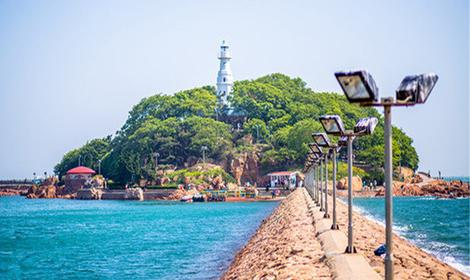

发布者 青岛旅行 2018-10-08 15:43:29
小青岛最显眼的景致是最高处矗立的一座洁白的锥形灯塔，这是海上过往船只进出胶州湾的重要航标。灯塔系1900年由德国人建造，1915年启用，解放后进行了大规模修建。塔身高15．5米，八角形，通体用白色大理石构筑，分上下两层，塔顶部装有水晶棱镜镶成的反射镜，并以牛眼形旋转式造镜电力发光。射程12海里，为来往船只导航。每当夜幕低垂，灯影波光形成青岛—景——“琴屿飘灯”。 小青岛北侧建—防波大堤，今已成为海上游艇的停靠之处。东部则与鲁迅公园相毗邻。游人可由鲁迅公园西侧的琴屿路经大堤上岛观光。岛上原长有许多稀有的黄色百合花，盛开之时，芳香扑鼻，十分喜人，是驰名国际植物界的一种花卉类型，德国人称之为“青岛百合”，可惜因游人日增，现在百合已无处寻觅。 小青岛早在30年代初就已辟为公园，设有茶厅、花圃、石凳、石椅，并辟建道路，修筑游艇码头。日本二次侵占青岛后，成为日军军事基地，并于1942年修筑长377米、宽8米的堤坝与陆地相连．成为陆连岛。自抗战胜利到解放后一直由部队驻守。1988年夏季，小青岛再度辟为公园，经重新规划建设，成为前海又一处旅游景点。
小青岛公园是山东省青岛市的标志性建筑，位于胶州湾入海口的青岛湾内，占地面积2.47平方千米。因岛上林木长青，遂称青岛；岛形如琴，水如弦，风吹波涛如琴声，又称琴岛。